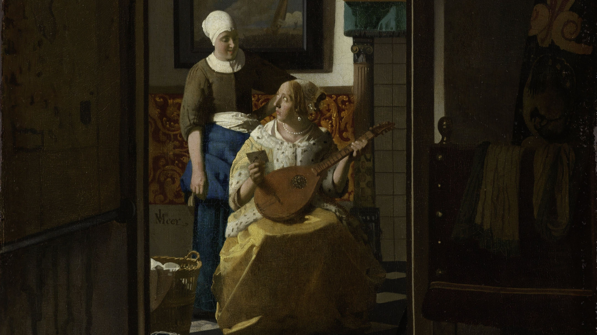
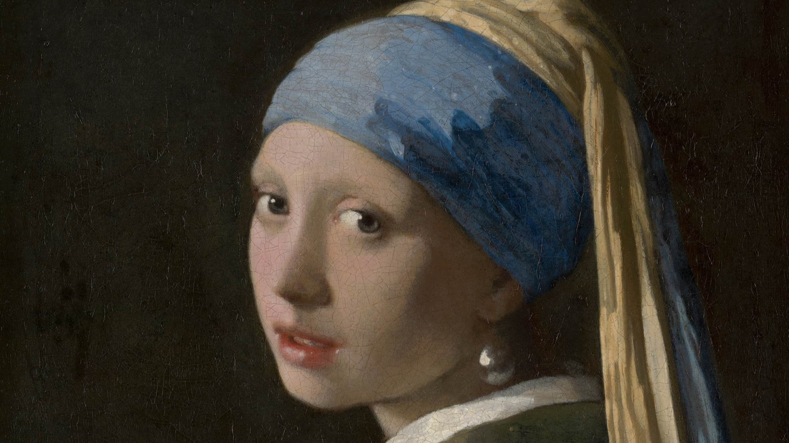
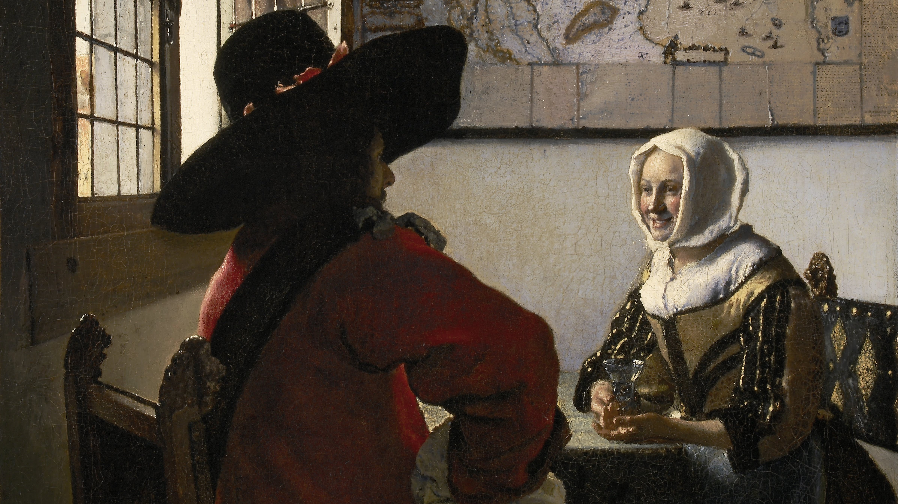
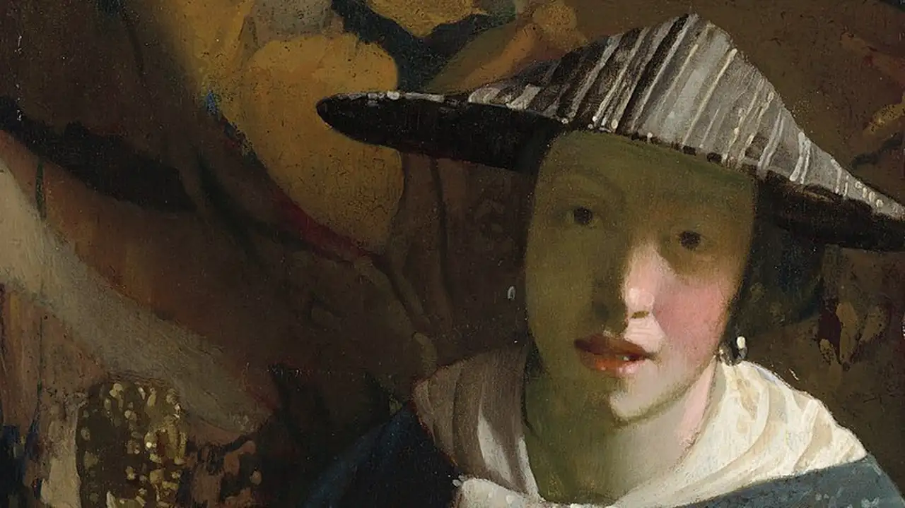
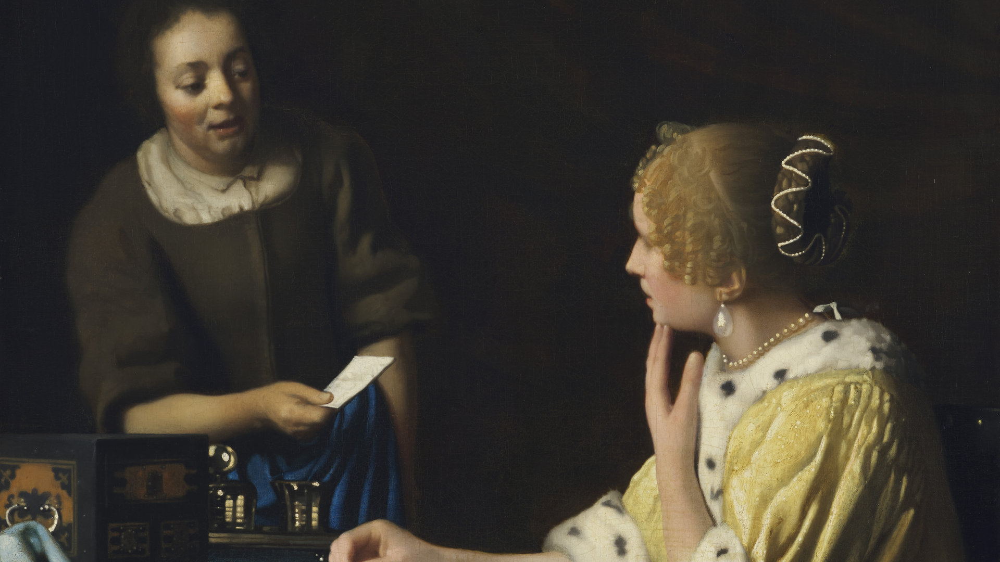
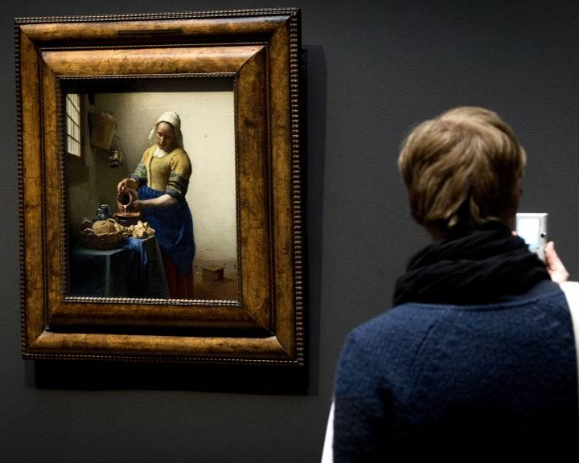
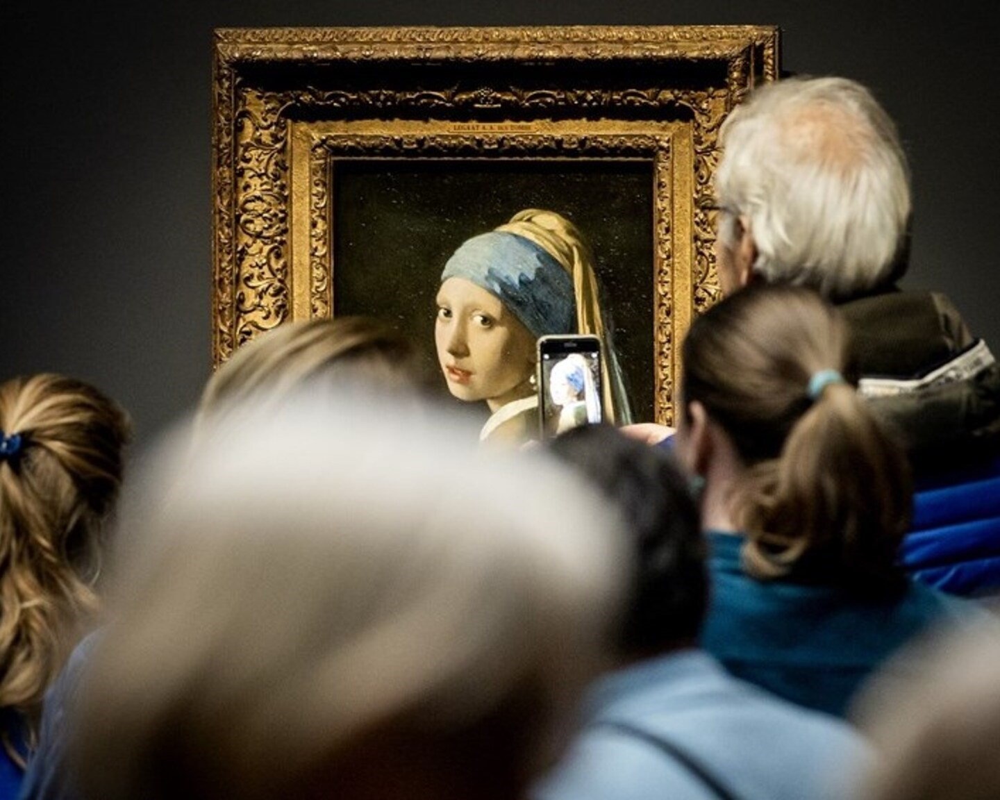

Voor sommige bewoners in verpleeghuizen en seniorencomplexen is op pad gaan en musea bezoeken niet mogelijk. Daarom brengen we vier meesterwerken van Vermeer naar hen toe! Niet de echte, maar we brengen mooie replica’s van Het melkmeisje, Brieflezende vrouw in het blauw, Het straatje en De liefdesbrief. Ze hangen in een kabinetje dat er net zo uit ziet als op de Eregalerij in het Rijksmuseum.
HOE WERKT HET
Het kabinet met de Vermeers blijft drie weken op jouw locatie staan, zodat mensen in alle rust alleen of in kleine groepjes de schilderijen kunnen bekijken. We sturen voor elke bewoner een brochure mee met informatie over de beroemde schilderijen en een ansichtkaart van één van de schilderijen van Vermeer. Daarnaast mailen we de locatie workshop-ideeën, een quiz en een prijsvraag. Medewerkers van Philips, de sponsor van dit project, krijgen een korte training bij het Rijksmuseum en kunnen een dagdeel langs komen om te vertellen over Vermeer.
VOOR WIE
Verpleeghuizen en seniorencomplexen in Nederland met minimaal 50 bewoners, die een ruimte hebben waar de wand met de Vermeers past, zie technische details.
PRIJS
- De kosten zijn € 250 euro. Hiervoor ontvangt u:
- De Vermeers voor 3 weken op uw locatie
- Brochures en ansichtkaarten voor alle bewoners
- Per mail workshops, quiz en prijsvraag
- Een puzzel van het Melkmeisje van Vermeer voor de winnaar van de prijsvraag
NACHTWACHT ON TOUR
Het is ook mogelijk om een levensgrote replica van de Nachtwacht te krijgen.
MET DANK AAN
Dit project is mogelijk gemaakt door Philips, de Elisabeth Art Foundation/Rijksmuseum Fonds en Pon. Philips is al 20 jaar verbonden als Founder van het Rijksmuseum. Samen zetten ze zich in om de levens van mensen te verbeteren, door hen in aanraking te laten komen met kunst. De Elisabeth Art Foundation is een fonds op naam opgericht door een particulier bij het Rijksmuseum Fonds ten behoeve van projecten in het Rijksmuseum die kunst en mensen bijeenbrengen.
€ 250 voor 3 weken Vermeer
VRAGEN
Mail naar: johannesvermeer@rijksmuseum.nl
VERMEER
Het melkmeisje, Brieflezende vrouw in het blauw, Het straatje en De liefdesbrief van Johannes Vermeer.
TECHNISCHE DETAILS
Je hebt een ruimte van minimaal 3,5 meter hoog en 9 meter breed nodig.
Je kunt het kabinet inlopen. De zijkanten zijn 3 meter diep.
We hebben natuurlijk rekening gehouden met brandveiligheid.
- VERMEER De liefdesbrief, ca. 1669 - ca. 1670 1 | 5
-  VERMEER Meisje met de parel, 1665 2 | 5
-  VERMEER Soldaat en lachend meisje, ca. 1655-60 3 | 5
-  VERMEER Meisje met de fluit, ca. 1665-67 4 | 5
-  VERMEER Dame en dienstbode, ca. 1666-1667 5 | 5
ZIEN EN DOEN
Alle activiteiten rondom de tentoonstelling
STORIES
Onze verhalen over de meester uit delft